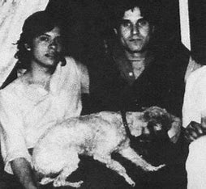
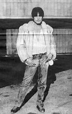
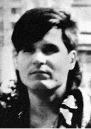

Cults are major control groups, involving:
The Cult of Santeria under Aldofo Constanzo
Based in Mexico
1984-1989
Godmother: Sarah Aldrete and Godfather: Aldofo Constanzo
Born in 1962, in the 1st of November
Aldofo had an unstable childhood with his mother re-marrying 3 times along his childhood and his parents continously commiting petty crimes
One of his fathers practiced 'Palo Mayombe', a religion that utilized animal sacrifice and introduced the religion to the boy, Aldofo joined the religion and it brought some control into Aldofo's life, explaining where his sacrificial views originated from.
At around 15 Aldofo had expierence with a sorceror and was heavily involved in Palo Mayombe, this made Aldofo believe he was "divine" and "the chosen one" due to his believed "magical skills"
This viewpoint furthered his involvement in crime, following in his parents footsteps with the belief he was "too good to be caught". When his actions such as drug dealing and theft went unwarranted he escalated to more severe crimes.
He created a business around his potions, the potions "allowing invincibility, luck, ect". In the business realm he was able to obtain cartell and high power positions liking.
These cartells and rich entities escalated the cult to get into a higher level of drug trafficking
He also encouraged partners he had to "help him", them helping him led to them being involved in the cult. An example being his girlfriend Sarah Aldrete, who helped Aldofo with the cult by being a component in the murdering and torturing of victims.
As time progressed Aldofo preached the idea of using human sacrifices, involving the cult into torture, kidnapping, and murder. Him being "magical" led his cult members to follow blindly.
The reason why this is a cult is due to the gaslighting that took place.
Aldofo would use his "divine" persona to get members to carry out acts they wouldn't think about doing such as murder and torture
The housing arrangements also showed cult functionality.
With a small apartment where members would live, providing an isolated place to further his members viewpoint in him being “divine” and knowing whats best.
The followers were commited of various crimes, but all plead that Aldofo manipulated them into their actions and they felt guilty of their actions.
All of these acts plus conformity define Aldofo's cult as a cult
  